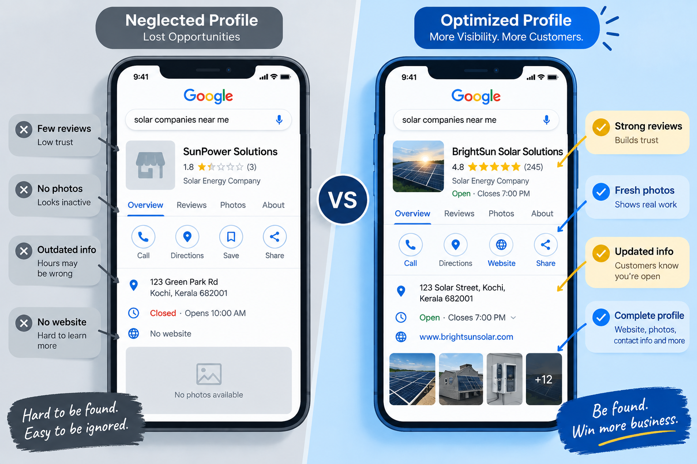
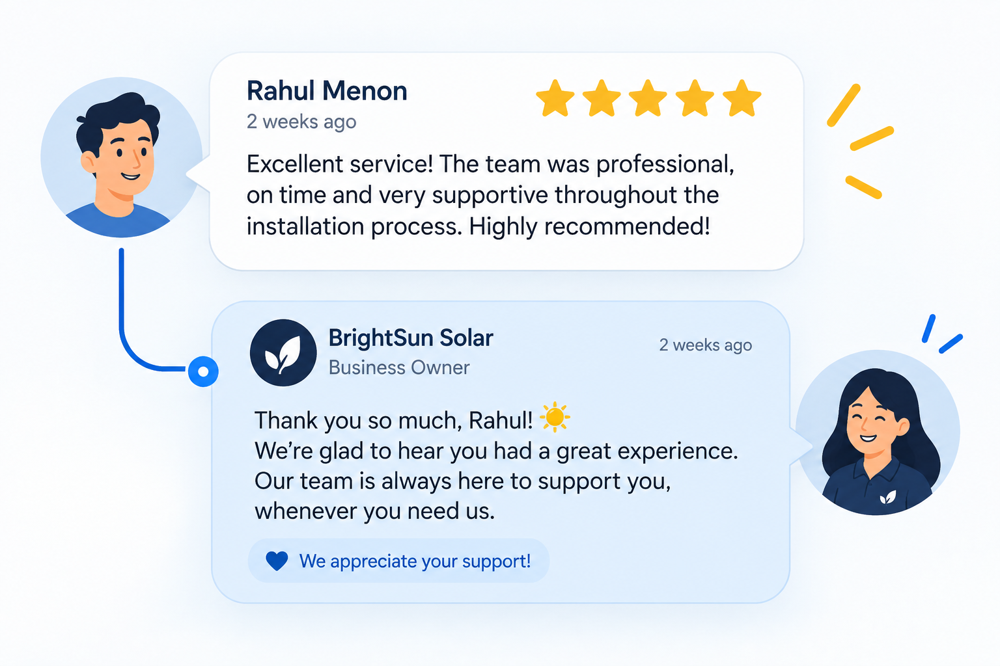
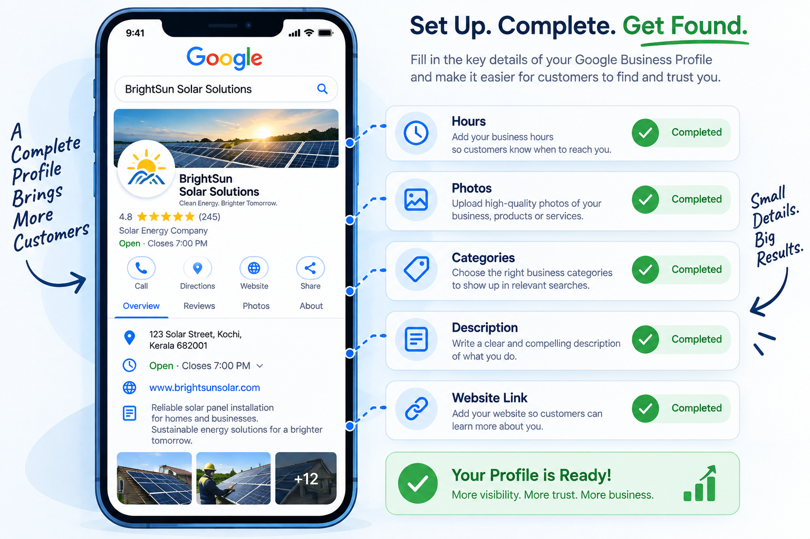
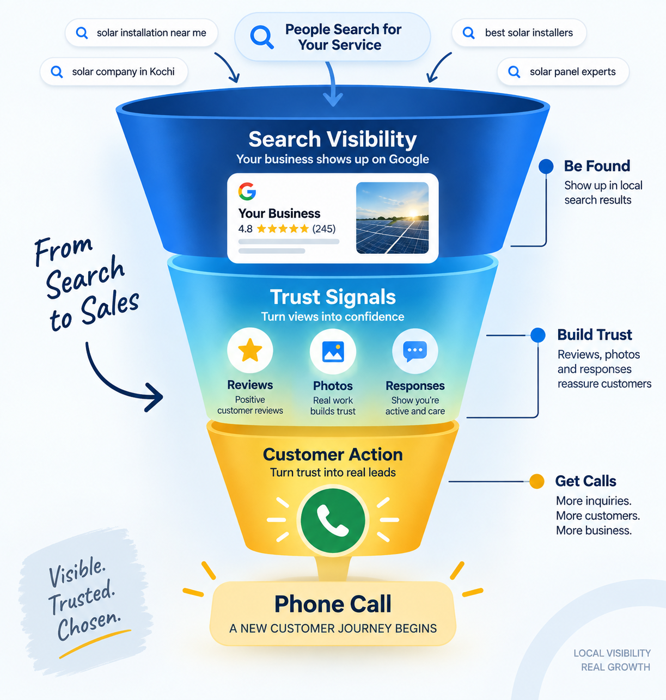
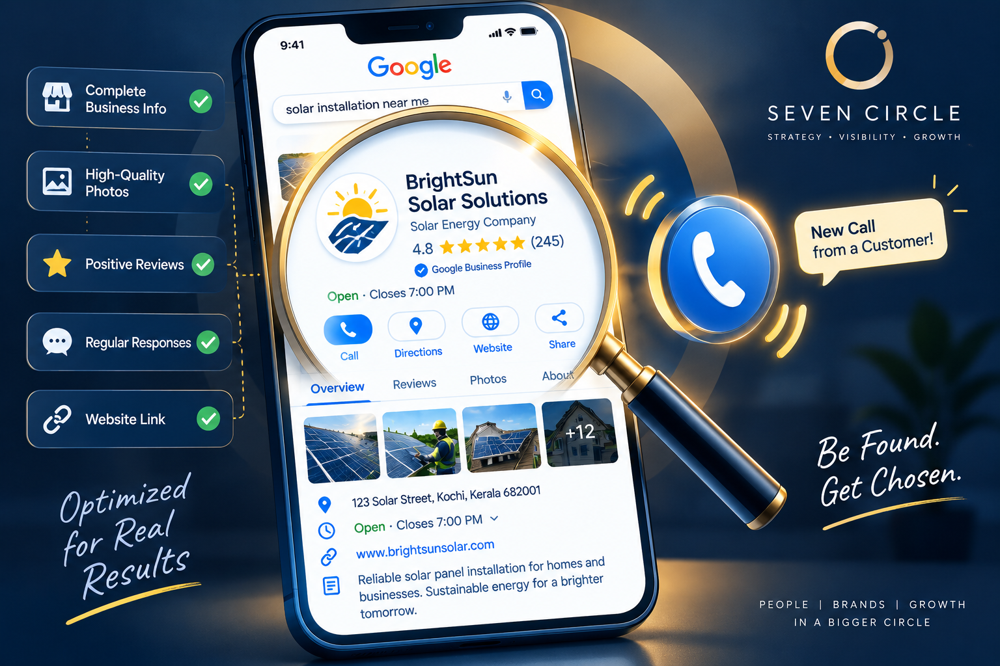

You checked. Your business really does show up when people search for what you offer. Maybe not in the very top spot, but it is there — name, address, perhaps even a few photos.
And yet the phone stays quiet. No calls, no bookings, no walk-ins mentioning “I saw you online.” It feels like the hard part is done, but the result is not showing up.
Here is what is really happening: visibility gets you seen. Trust gets you called. If your online presence looks incomplete, inconsistent or unproven, people quietly scroll to a competitor — even if you ranked higher.
You’re being found. You’re just not being trusted.
The search result is not the decision.
The trust snapshot is.
When someone searches “plumber near me” or “best bakery in Kochi,” Google does not just show a list of names. It shows a snapshot of trust: your rating, review count, photos, hours and responses.
That snapshot is evaluated in the time it takes to skim three or four listings. If your profile does not win that moment, it does not matter that you are technically visible. The customer has already moved on to whoever looked more trustworthy in the split-second scan.

Seven reasons people find you
but do not call.
1. Too few reviews or a rating that does not match your quality
A handful of reviews — or a rating around three stars — signals risk beside competitors with dozens of recent, positive reviews, regardless of how good your actual service is.
The fix: Build a simple system for requesting reviews after every positive interaction. The businesses with the most reviews are rarely the best; they are often the most consistent at asking.
2. No response to reviews, especially negative ones
An unanswered negative review left sitting for months signals a business that does not engage or care. Even a short, professional response can change how a prospective customer reads it.
The fix: Respond to every review promptly and professionally. It shows an active, accountable business before the customer ever calls.

3. Outdated or missing photos
A profile with no photos, or photos that look years old, makes it hard for someone to picture what to expect. Uncertainty is one of the biggest silent conversion killers in local search.
The fix: Upload fresh, high-quality photos regularly: your storefront, team, product or service in action.
4. Incomplete or inconsistent business information
Missing hours, an outdated phone number or an address that does not match your actual location creates friction exactly when someone is deciding whether to reach out.
The fix: Complete every field — hours, categories, services, attributes and website link — and keep the information consistent across platforms.

5. There is no clear answer to “What makes you different?”
If your description reads like every other business in the category, there is no compelling reason to choose you over the listing next to you.
The fix: Highlight a specialty, guarantee, process or experience that is specific to your business — not generic language every competitor could copy.
6. Slow or no response to messages and questions
If Google messages or Q&A sit unanswered for days, that silence reads as unreliability before the customer has even spoken to you.
The fix: Monitor and respond quickly, ideally within a few hours. Fast responses are a strong, visible trust signal.
7. The website link leads to a broken or outdated experience
A slow, confusing or outdated website can unravel all the trust your Google profile built in seconds.
The fix: Make the website fast-loading, mobile-friendly and consistent with the quality and information on your profile.
Visibility versus trust:
find the weak link.
Use the symptom to identify what needs attention first.
| Symptom | Likely cause |
|---|---|
| You rank well but get few clicks | Weak review count or rating compared with competitors. |
| You get profile views but no calls | Missing photos, outdated information or no differentiation. |
| People click through but bounce quickly | The website does not match the trust built by the profile. |
| Occasional calls, but not consistently | No system for maintaining reviews and freshness over time. |
A weak profile loses
more than today’s call.
Local search algorithms increasingly favour profiles with strong engagement signals: reviews, photos, response rates and consistent activity. A weak profile does not only lose the trust moment; it can slowly lose the visibility that got it found in the first place.

Ignoring the gap can cost calls today and reduce your ability to appear tomorrow. The good news is that each signal can be improved deliberately.
Turn Google visibility
into actual calls.
Seven Circle’s Google Business Management service is built to close the gap between being found and being chosen.

- Profile optimizationComplete, accurate and consistently updated business information.
- Review generation systemsA steady, authentic flow of positive reviews built into the customer journey.
- Professional photo strategyFresh visuals that make the profile feel current, real and trustworthy.
- Review response managementEvery customer interaction reflects an active, accountable business.
- Website connectionThe trust built on Google carries through to a fast, clear website experience.
Getting found was the easy part. Let’s make sure it actually turns into the phone ringing.
Questions worth
asking first.
How many reviews do I need to build trust?
There is no fixed number, but 20 or more recent, genuine reviews and a rating above four stars generally creates a stronger trust signal than a profile with only a handful.
Does responding to reviews really make a difference?
Yes. It signals active management and accountability, and many customers read business responses — especially to negative reviews — before making contact.
How often should I update my Google Business Profile?
Ideally weekly or biweekly with new photos, posts or updates. Consistent activity signals an active, trustworthy business to both customers and the algorithm.
Can a bad website undo a great Google profile?
Absolutely. If the profile builds trust but the website is slow, outdated or confusing, that trust can collapse the moment someone clicks through.
- Visibility gets you seen.
- Trust gets you called.
- Fresh, complete profiles convert attention into action.
Your business is already being found. Now give people enough confidence to choose it.
Book a Google Profile audit ↗